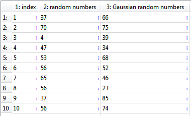
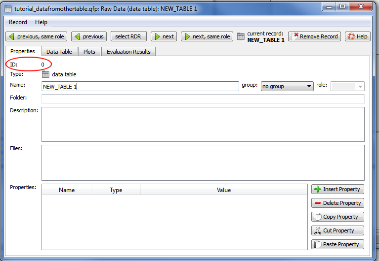
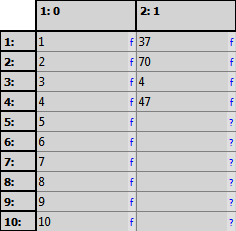
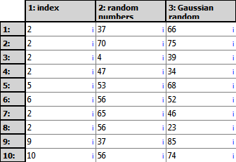
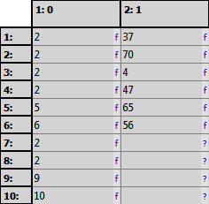
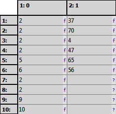

$$qf_commondoc_header.start$$ $$qf_commondoc_header.end$$
Introduction
Table cell and column expressions also allow to read data from another table RDR.
The expression use the built-in expression parser, which has been extended with special functions to access the contents of the current table and for column statistics in the current table RDR. This tutorial will use the functions table_...() built into the function parser, which allow to access any table within the project.
You can reach this functionality by double-clicking any column header and then activating the "expression" checkbox in the table column editor dialog.
Tutorial
- Start a new QuickFit project and add two editable tables (Data Items | Insert Raw Data | Table | Editable Table).
- Open the first table editor (double-click table in project)
- Go to the "Data Table" tab. It will now display an empkty table.
- Now we add some arbitrary data to the table. To do so, copy (select & Ctrl+C) the following CSV data and insert it into the table by pressing Ctrl+V$$startbox_example$$
#! "index"; "random numbers"; "Gaussian random numbers"
1; 37; 66
2; 70; 75
3; 4; 39
4; 47; 34
5; 53; 68
6; 56; 52
7; 65; 46
8; 56; 23
9; 37; 85
10; 56; 74
$$endbox$$ This will result in a table like this:

The given table of values contains one column with increasing numbers, one column of random numbers drawn from a flat distribution between 0 and 100 and one column of Gaussian random variates with mean 50 and standard deviation 20.
- We will now access this data from the second table. To do so, we first need to know the ID of the table RDR within the project. To find that out, go to the tab "Properties" and note down the ID of the first table RDR. It should be "0".:

- Close the table editor again and open the editor of the second table (double-click on it in the project tree).
- In the second table, double-click on the first column header and set this expression:
$$codeexample:table_numcolumn(0,1)$$
This reads the contents of the first column in table 1 as an array of numbers and inserts it into the current table as a column. The first argument is the RDR ID of the other table RDR and the second argument is the column you want to acces.$$note:the column id is 1-base,. i.e. the first column is 1, the second 2, ...$$
- Now double-click the second column and enter this expression:
$$codeexample:item(table_numcolumn(0,2), table_numcolumn(0,1)<5)$$
This will insert only the first 4 items from the second column, i.e. those, where the value in the first column is smaller than 1. The table will look like this:

- Now open the first table again and change some data, i.e. in the first column:

- Go back to the second table editor and press the button
 . Now the data from the table is reread and the table will now look like this:

. Now the data from the table is reread and the table will now look like this:
